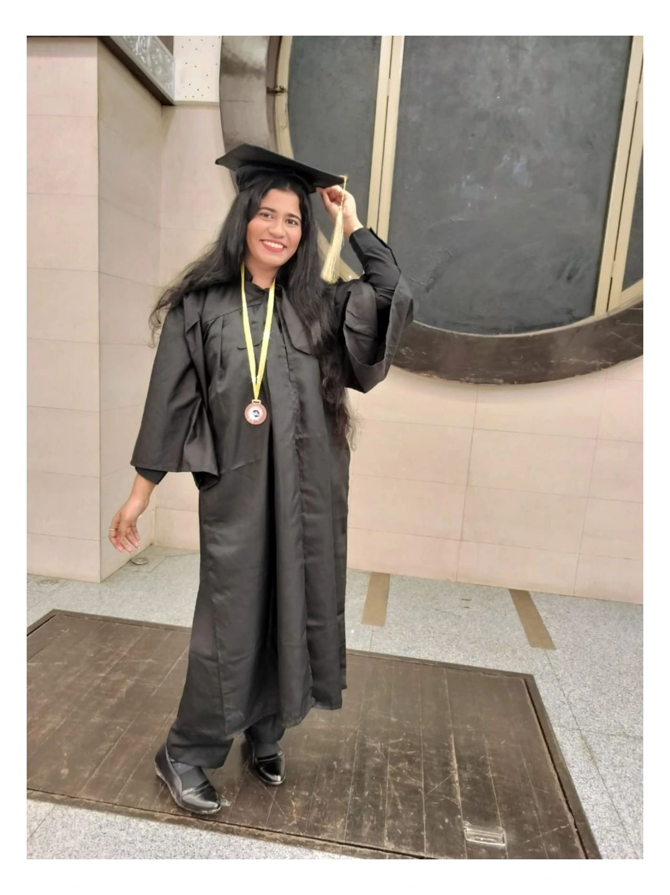
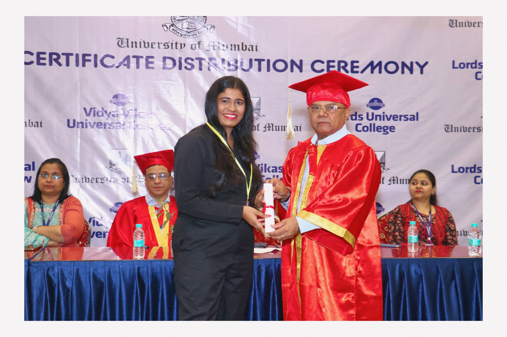
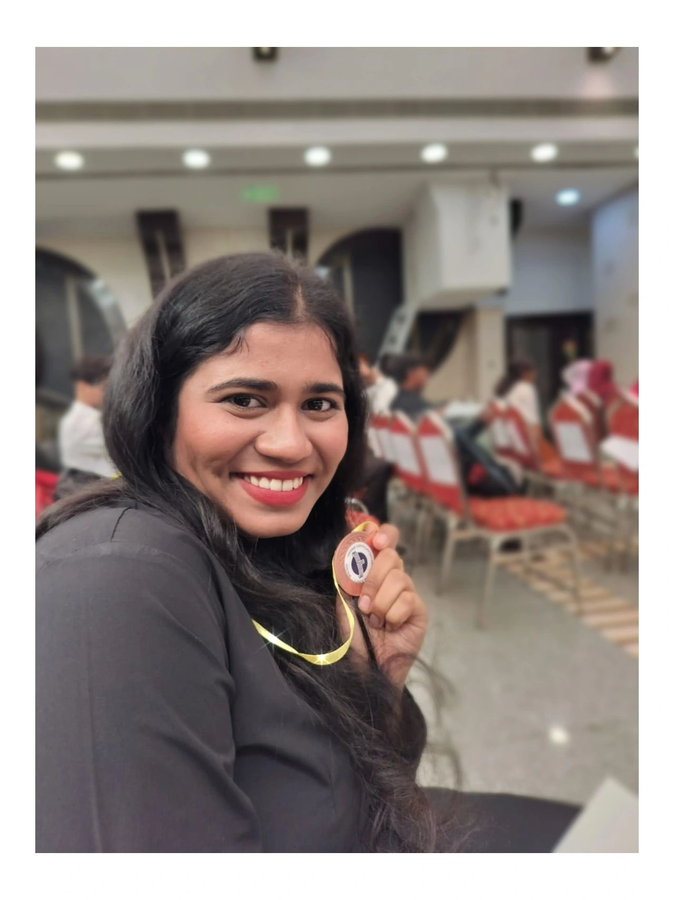
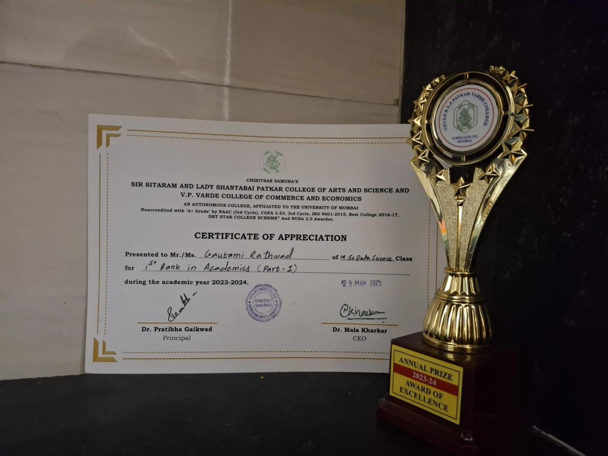
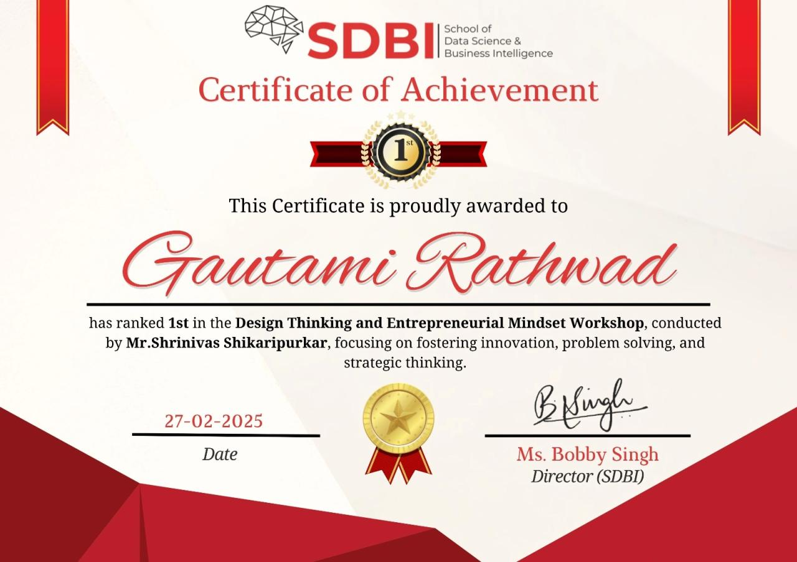
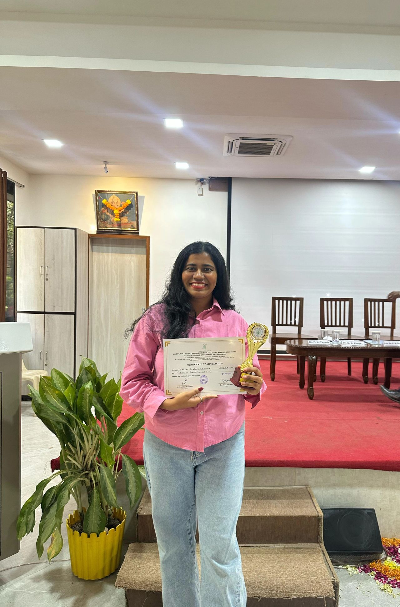

My journey into technology began with curiosity. I always enjoyed understanding how things work, solving problems, and creating better solutions. Over time, that curiosity turned into a passion for data, software, and building products that make a real impact.
During my B.Sc. in Computer Science, I discovered that technology wasn't just something I wanted to study—it was something I wanted to build. I spent countless hours learning programming, databases, analytics, and web development beyond the classroom.
I graduated with a CGPA of 9.25 and secured Second Rank in my Bachelor's degree, giving me the confidence to pursue higher studies in Data Science.



I then joined the M.Sc. in Data Science & Big Data Analytics at the University of Mumbai, where I explored machine learning, artificial intelligence, big data, and business intelligence. It was during this time that I realized how data can solve real-world problems.
While studying, I also wanted to become financially independent. Alongside my academics, I started giving personal tuition to students. Teaching helped me improve my communication skills and taught me the importance of discipline and time management.



During the summer break after my first year, I joined an internship to gain practical experience. At the end of the internship, I was offered a part-time role, which I happily accepted.
For the rest of my Master's degree, I balanced university, work, research, assignments, and deadlines together. It wasn't always easy, but those experiences taught me resilience, responsibility, and how to manage pressure.
Despite juggling both academics and work, I graduated with a CGPA of 9.25 and secured First Rank in my Master's degree. That achievement means much more to me because of everything it took to get there.
During this time, I also completed a Design Thinking & Entrepreneur Mindset Workshop and published a research paper in Generative AI, experiences that further strengthened my interest in innovation and emerging technologies.
My internship eventually grew into a full-time career. Over the years, I've worked across Data Analytics, Full Stack Development, CRM platforms, IoT, Digital Marketing, and Business Intelligence. Today, I work as a Project Manager, helping teams build technology that delivers real business value.
I'm still learning every day. My goal is simple: keep building, keep solving problems, and create technology that makes a meaningful difference.